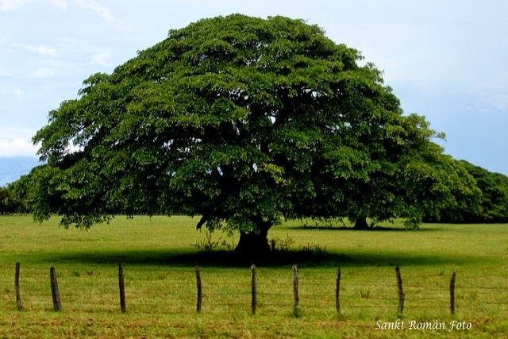

Símbolos Patrios



La Historia de Nicaragua recorre el período temporal desde la llegada de los europeos a tierras americanas a la actualidad. Los primeros colonos españoles conducidos por Gil González Dávila penetraron en Nicaragua hacia el año 1520 y el país fue agregado a la Capitanía General de Guatemala. La dominación española permaneció limitada a la costa del océano Pacífico y las áreas inmediatas. Durante el periodo colonial, Nicaragua formó parte de la Capitanía General de Guatemala. Durante ese periodo Nicaragua fue la principal vía de comunicación entre el Pacífico y el Atlántico ya que tenía un sistema de transporte lacustre que facilitaba el movimiento de materias y personas a regiones aledañas. El Realejo fue en particular uno de los puertos principales en el Pacífico donde se construyeron gran parte de los galeones entre Manila y Acapulco. El Realejo, entre los siglos XVI y principios del XIX, sirvió como uno de los puertos principales en el comercio de esclavos para las colonias en el Pacífico como Perú, Ecuador, Colombia, Acapulco, y como punto de concentración de las riquezas que se obtuvieron por medio del comercio bimetálico (Plata para China por medio de Manila, y oro para España). Gran parte de esos movimientos, pasaron por Nicaragua ya que era la más fácil y mejor protegida, aun así Nicaragua fue atacada por diferentes naciones, Inglaterra en particular.
Managua, Nicaragua